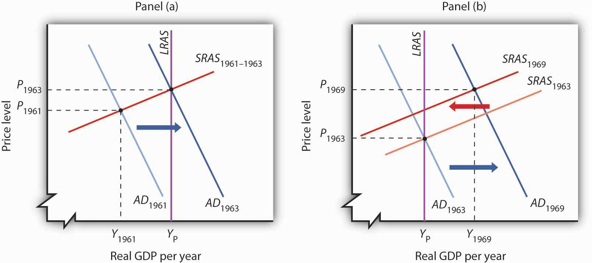
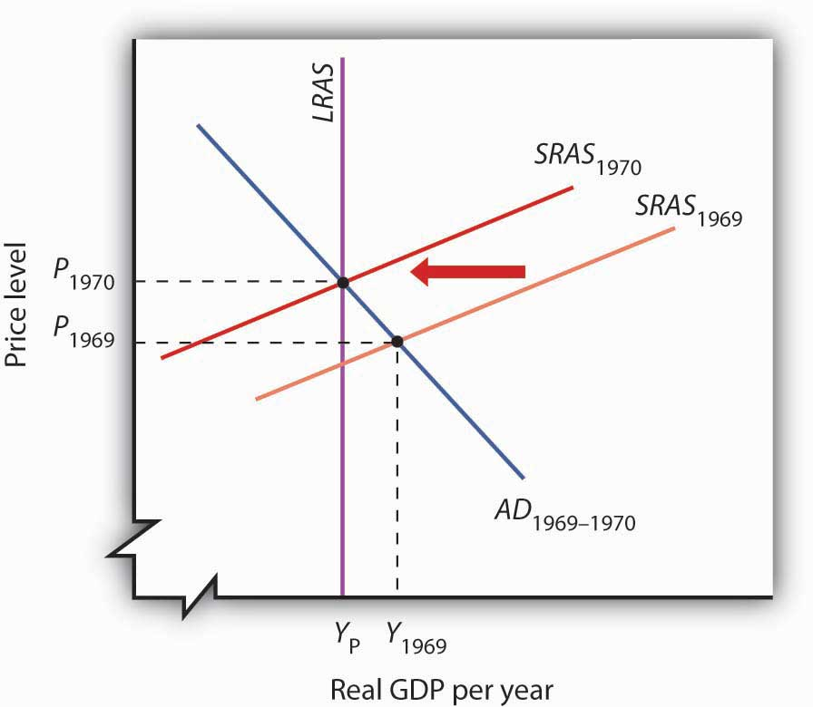
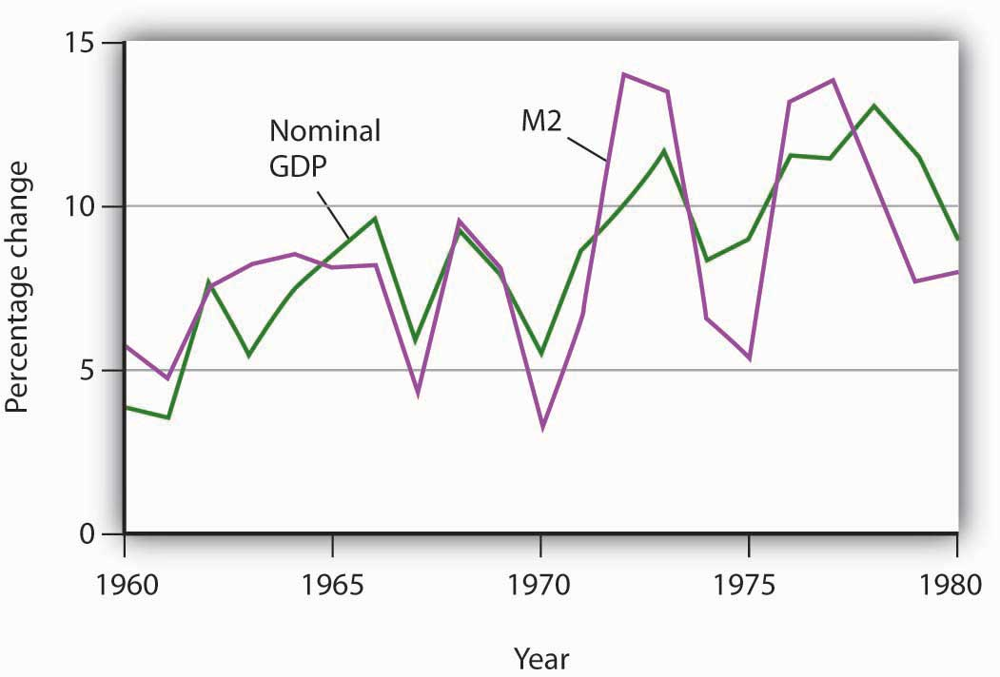
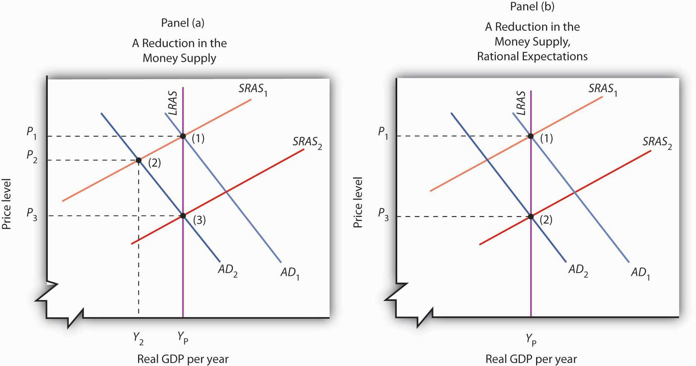

The experience of the Great Depression led to the widespread acceptance of Keynesian ideas among economists, but its acceptance as a basis for economic policy was slower. The administrations of Presidents Roosevelt, Truman, and Eisenhower rejected the notion that fiscal policy could or should be used to manipulate real GDP. Truman vetoed a 1948 Republican-sponsored tax cut aimed at stimulating the economy after World War II (Congress, however, overrode the veto), and Eisenhower resisted stimulative measures to deal with the recessions of 1953, 1957, and 1960.
It was the administration of President John F. Kennedy that first used fiscal policy with the intent of manipulating aggregate demand to move the economy toward its potential output. Kennedy’s willingness to embrace Keynes’s ideas changed the nation’s approach to fiscal policy for the next two decades.
We can think of the macroeconomic history of the 1960s as encompassing two distinct phases. The first showed the power of Keynesian policies to correct economic difficulties. The second showed the power of these same policies to create them.
President Kennedy took office in 1961 with the economy in a recessionary gap. He had appointed a team of economic advisers who believed in Keynesian economics, and they advocated an activist approach to fiscal policy. The new president was quick to act on their advice.
Expansionary policy served the administration’s foreign-policy purposes. Kennedy argued that the United States had fallen behind the Soviet Union, its avowed enemy, in military preparedness. He won approval from Congress for sharp increases in defense spending in 1961.
The Kennedy administration also added accelerated depreciation to the tax code. Under the measure, firms could deduct depreciation expenses more quickly, reducing their taxable profits—and thus their taxes—early in the life of a capital asset. The measure encouraged investment. The administration also introduced an investment tax credit, which allowed corporations to reduce their income taxes by 10% of their investment in any one year. The combination of increased defense spending and tax measures to stimulate investment provided a quick boost to aggregate demand.
The Fed followed the administration’s lead. It, too, shifted to an expansionary policy in 1961. The Fed purchased government bonds to increase the money supply and reduce interest rates.
As shown in Panel (a) of Figure 32.4 "The Two Faces of Expansionary Policy in the 1960s", the expansionary fiscal and monetary policies of the early 1960s had pushed real GDP to its potential by 1963. But the concept of potential output had not been developed in 1963; Kennedy administration economists had defined full employment to be an unemployment rate of 4%. The actual unemployment rate in 1963 was 5.7%; the perception of the time was that the economy needed further stimulus.
Figure 32.4 The Two Faces of Expansionary Policy in the 1960s
Expansionary fiscal and monetary policy early in the 1960s (Panel [a]) closed a recessionary gap, but continued expansionary policy created an inflationary gap by the end of the decade (Panel [b]). The short-run aggregate supply curve began shifting to the left, but expansionary policy continued to shift aggregate demand to the right and kept the economy in an inflationary gap.
Kennedy proposed a tax cut in 1963, which Congress would approve the following year, after the president had been assassinated. In retrospect, we may regard the tax cut as representing a kind of a recognition lag— policy makers did not realize the economy had already reached what we now recognize was its potential output. Instead of closing a recessionary gap, the tax cut helped push the economy into an inflationary gap, as illustrated in Panel (b) of Figure 32.4 "The Two Faces of Expansionary Policy in the 1960s".
The expansionary policies, however, did not stop with the tax cut. Continued increases in federal spending for the newly expanded war in Vietnam and for President Lyndon Johnson’s agenda of domestic programs, together with continued high rates of money growth, sent the aggregate demand curve further to the right. While President Johnson’s Council of Economic Advisers recommended contractionary policy as early as 1965, macroeconomic policy remained generally expansionary through 1969. Wage increases began shifting the short-run aggregate supply curve to the left, but expansionary policy continued to increase aggregate demand and kept the economy in an inflationary gap for the last six years of the 1960s. Panel (b) of Figure 32.4 "The Two Faces of Expansionary Policy in the 1960s" shows expansionary policies pushing the economy beyond its potential output after 1963.
The 1960s had demonstrated two important lessons about Keynesian macroeconomic policy. First, stimulative fiscal and monetary policy could be used to close a recessionary gap. Second, fiscal policies could have a long implementation lag. The tax cut recommended by President Kennedy’s economic advisers in 1961 was not enacted until 1964—after the recessionary gap it was designed to fight had been closed. The tax increase recommended by President Johnson’s economic advisers in 1965 was not passed until 1968—after the inflationary gap it was designed to close had widened.
Macroeconomic policy after 1963 pushed the economy into an inflationary gap. The push into an inflationary gap did produce rising employment and a rising real GDP. But the inflation that came with it, together with other problems, would create real difficulties for the economy and for macroeconomic policy in the 1970s.
For many observers, the use of Keynesian fiscal and monetary policies in the 1960s had been a triumph. That triumph turned into a series of macroeconomic disasters in the 1970s as inflation and unemployment spiraled to ever-higher levels. The fiscal and monetary medicine that had seemed to work so well in the 1960s seemed capable of producing only instability in the 1970s. The experience of the period shook the faith of many economists in Keynesian remedies and made them receptive to alternative approaches.
This section describes the major macroeconomic events of the 1970s. It then examines the emergence of two schools of economic thought as major challengers to the Keynesian orthodoxy that had seemed so dominant a decade earlier.
When Richard Nixon became president in 1969, he faced a very different economic situation than the one that had confronted John Kennedy eight years earlier. The economy had clearly pushed beyond full employment; the unemployment rate had plunged to 3.6% in 1968. Inflation, measured using the implicit price deflator, had soared to 4.3%, the highest rate that had been recorded since 1951. The economy needed a cooling off. Nixon, the Fed, and the economy’s own process of self-correction delivered it.
Figure 32.5 "The Economy Closes an Inflationary Gap" tells the story—it is a simple one. The economy in 1969 was in an inflationary gap. It had been in such a gap for years, but this time policy makers were no longer forcing increases in aggregate demand to keep it there. The adjustment in short-run aggregate supply brought the economy back to its potential output.
Figure 32.5 The Economy Closes an Inflationary Gap
The Nixon administration and the Fed joined to end the expansionary policies that had prevailed in the 1960s, so that aggregate demand did not rise in 1970, but the short-run aggregate supply curve shifted to the left as the economy responded to an inflationary gap.
But what we can see now as a simple adjustment seemed anything but simple in 1970. Economists did not think in terms of shifts in short-run aggregate supply. Keynesian economics focused on shifts in aggregate demand, not supply.
For the Nixon administration, the slump in real GDP in 1970 was a recession, albeit an odd one. The price level had risen sharply. That was not, according to the Keynesian story, supposed to happen; there was simply no reason to expect the price level to soar when real GDP and employment were falling.
The administration dealt with the recession by shifting to an expansionary fiscal policy. By 1973, the economy was again in an inflationary gap. The economy’s 1974 adjustment to the gap came with another jolt. The Organization of Petroleum Exporting Countries (OPEC) tripled the price of oil. The resulting shift to the left in short-run aggregate supply gave the economy another recession and another jump in the price level.
The second half of the decade was, in some respects, a repeat of the first. The administrations of Gerald Ford and then Jimmy Carter, along with the Fed, pursued expansionary policies to stimulate the economy. Those helped boost output, but they also pushed up prices. As we saw in the chapter on inflation and unemployment, inflation and unemployment followed a cycle to higher and higher levels.
The 1970s presented a challenge not just to policy makers, but to economists as well. The sharp changes in real GDP and in the price level could not be explained by a Keynesian analysis that focused on aggregate demand. Something else was happening. As economists grappled to explain it, their efforts would produce the model with which we have been dealing and around which a broad consensus of economists has emerged. But, before that consensus was to come, two additional elements of the puzzle had to be added. The first was the recognition of the importance of monetary policy. The second was the recognition of the role of aggregate supply, both in the long and in the short run.
The idea that changes in the money supply are the principal determinant of the nominal value of total output is one of the oldest in economic thought; it is implied by the equation of exchange, assuming the stability of velocity. Classical economists stressed the long run and thus the determination of the economy’s potential output. This meant that changes in the price level were, in the long run, the result of changes in the money supply.
At roughly the same time Keynesian economics was emerging as the dominant school of macroeconomic thought, some economists focused on changes in the money supply as the primary determinant of changes in the nominal value of output. Led by Milton Friedman, they stressed the role of changes in the money supply as the principal determinant of changes in nominal output in the short run as well as in the long run. They argued that fiscal policy had no effect on the economy. Their “money rules” doctrine led to the name monetarists. The monetarist schoolThe body of macroeconomic thought that holds that changes in the money supply are the primary cause of changes in nominal GDP. holds that changes in the money supply are the primary cause of changes in nominal GDP.
Monetarists generally argue that the impact lags of monetary policy—the lags from the time monetary policy is undertaken to the time the policy affects nominal GDP—are so long and variable that trying to stabilize the economy using monetary policy can be destabilizing. Monetarists thus are critical of activist stabilization policies. They argue that, because of crowding-out effects, fiscal policy has no effect on GDP. Monetary policy does, but it should not be used. Instead, most monetarists urge the Fed to increase the money supply at a fixed annual rate, preferably the rate at which potential output rises. With stable velocity, that would eliminate inflation in the long run. Recessionary or inflationary gaps could occur in the short run, but monetarists generally argue that self-correction will take care of them more effectively than would activist monetary policy.
While monetarists differ from Keynesians in their assessment of the impact of fiscal policy, the primary difference in the two schools lies in their degree of optimism about whether stabilization policy can, in fact, be counted on to bring the economy back to its potential output. For monetarists, the complexity of economic life and the uncertain nature of lags mean that efforts to use monetary policy to stabilize the economy can be destabilizing. Monetarists argued that the difficulties encountered by policy makers as they tried to respond to the dramatic events of the 1970s demonstrated the superiority of a policy that simply increased the money supply at a slow, steady rate.
Monetarists could also cite the apparent validity of an adjustment mechanism proposed by Milton Friedman in 1968. As the economy continued to expand in the 1960s, and as unemployment continued to fall, Friedman said that unemployment had fallen below its natural rate, the rate consistent with equilibrium in the labor market. Any divergence of unemployment from its natural rate, he insisted, would necessarily be temporary. He suggested that the low unemployment of 1968 (the rate was 3.6% that year) meant that workers had been surprised by rising prices. Higher prices had produced a real wage below what workers and firms had expected. Friedman predicted that as workers demanded and got higher nominal wages, the price level would shoot up and unemployment would rise. That, of course, is precisely what happened in 1970 and 1971. Friedman’s notion of the natural rate of unemployment buttressed the monetarist argument that the economy moves to its potential output on its own.
Perhaps the most potent argument from the monetarist camp was the behavior of the economy itself. During the 1960s, monetarist and Keynesian economists alike could argue that economic performance was consistent with their respective views of the world. Keynesians could point to expansions in economic activity that they could ascribe to expansionary fiscal policy, but economic activity also moved closely with changes in the money supply, just as monetarists predicted. During the 1970s, however, it was difficult for Keynesians to argue that policies that affected aggregate demand were having the predicted impact on the economy. Changes in aggregate supply had repeatedly pushed the economy off a Keynesian course. But monetarists, once again, could point to a consistent relationship between changes in the money supply and changes in economic activity.
Figure 32.6 "M2 and Nominal GDP, 1960–1980" shows the movement of nominal GDP and M2 during the 1960s and 1970s. In the figure, annual percentage changes in M2 are plotted against percentage changes in nominal GDP a year later to account for the lagged effects of changes in the money supply. We see that there was a close relationship between changes in the quantity of money and subsequent changes in nominal GDP.
Figure 32.6 M2 and Nominal GDP, 1960–1980
The chart shows annual rates of change in M2 and in nominal GDP, lagged one year. The observation for 1961, for example, shows that nominal GDP increased 3.5% and that M2 increased 4.9% in the previous year, 1960. The two variables showed a close relationship in the 1960s and 1970s.
Monetarist doctrine emerged as a potent challenge to Keynesian economics in the 1970s largely because of the close correspondence between nominal GDP and the money supply. The next section examines another school of thought that came to prominence in the 1970s.
Much of the difficulty policy makers encountered during the decade of the 1970s resulted from shifts in aggregate supply. Keynesian economics and, to a lesser degree, monetarism had focused on aggregate demand. As it became clear that an analysis incorporating the supply side was an essential part of the macroeconomic puzzle, some economists turned to an entirely new way of looking at macroeconomic issues.
These economists started with what we identified at the beginning of this text as a distinguishing characteristic of economic thought: a focus on individuals and their decisions. Keynesian economics employed aggregate analysis and paid little attention to individual choices. Monetarist doctrine was based on the analysis of individuals’ maximizing behavior with respect to money demand, but it did not extend that analysis to decisions that affect aggregate supply. The new approach aimed at an analysis of how individual choices would affect the entire spectrum of economic activity.
These economists rejected the entire framework of conventional macroeconomic analysis. Indeed, they rejected the very term. For them there is no macroeconomics, nor is there something called microeconomics. For them, there is only economics, which they regard as the analysis of behavior based on individual maximization. The analysis of the determination of the price level and real GDP becomes an application of basic economic theory, not a separate body of thought. The approach to macroeconomic analysis built from an analysis of individual maximizing choices is called new classical economicsThe approach to macroeconomic analysis built from an analysis of individual maximizing choices and emphasizing wage and price flexibility..
Like classical economic thought, new classical economics focuses on the determination of long-run aggregate supply and the economy’s ability to reach this level of output quickly. But the similarity ends there. Classical economics emerged in large part before economists had developed sophisticated mathematical models of maximizing behavior. The new classical economics puts mathematics to work in an extremely complex way to generalize from individual behavior to aggregate results.
Because the new classical approach suggests that the economy will remain at or near its potential output, it follows that the changes we observe in economic activity result not from changes in aggregate demand but from changes in long-run aggregate supply. New classical economics suggests that economic changes don’t necessarily imply economic problems.
New classical economists pointed to the supply-side shocks of the 1970s, both from changes in oil prices and changes in expectations, as evidence that their emphasis on aggregate supply was on the mark. They argued that the large observed swings in real GDP reflected underlying changes in the economy’s potential output. The recessionary and inflationary gaps that so perplexed policy makers during the 1970s were not gaps at all, the new classical economists insisted. Instead, they reflected changes in the economy’s own potential output.
Two particularly controversial propositions of new classical theory relate to the impacts of monetary and of fiscal policy. Both are implications of the rational expectations hypothesisIndividuals form expectations about the future based on the information available to them, and they act on those expectations., which assumes that individuals form expectations about the future based on the information available to them, and that they act on those expectations.
The rational expectations hypothesis suggests that monetary policy, even though it will affect the aggregate demand curve, might have no effect on real GDP. This possibility, which was suggested by Robert Lucas, is illustrated in Figure 32.7 "Contractionary Monetary Policy: With and Without Rational Expectations". Suppose the economy is initially in equilibrium at point 1 in Panel (a). Real GDP equals its potential output, YP. Now suppose a reduction in the money supply causes aggregate demand to fall to AD2. In our model, the solution moves to point 2; the price level falls to P2, and real GDP falls to Y2. There is a recessionary gap. In the long run, the short-run aggregate supply curve shifts to SRAS2, the price level falls to P3, and the economy returns to its potential output at point 3.
Figure 32.7 Contractionary Monetary Policy: With and Without Rational Expectations
Panels (a) and (b) show an economy operating at potential output (1); a contractionary monetary policy shifts aggregate demand to AD2. Panel (a) shows the kind of response we have studied up to this point; real GDP falls to Y2 in period (2); the recessionary gap is closed in the long run by falling nominal wages that cause an increase in short-run aggregate supply in period (3). Panel (b) shows the rational expectations argument. People anticipate the impact of the contractionary policy when it is undertaken, so that the short-run aggregate supply curve shifts to the right at the same time the aggregate demand curve shifts to the left. The result is a reduction in the price level but no change in real GDP; the solution moves from (1) to (2).
The new classical story is quite different. Consumers and firms observe that the money supply has fallen and anticipate the eventual reduction in the price level to P3. They adjust their expectations accordingly. Workers agree to lower nominal wages, and the short-run aggregate supply curve shifts to SRAS2. This occurs as aggregate demand falls. As suggested in Panel (b), the price level falls to P3, and output remains at potential. The solution moves from (1) to (2) with no loss in real GDP.
In this new classical world, there is only one way for a change in the money supply to affect output, and that is for the change to take people by surprise. An unexpected change cannot affect expectations, so the short-run aggregate supply curve does not shift in the short run, and events play out as in Panel (a). Monetary policy can affect output, but only if it takes people by surprise.
The new classical school offers an even stronger case against the operation of fiscal policy. It argues that fiscal policy does not shift the aggregate demand curve at all! Consider, for example, an expansionary fiscal policy. Such a policy involves an increase in government purchases or transfer payments or a cut in taxes. Any of these policies will increase the deficit or reduce the surplus. New classical economists argue that households, when they observe the government carrying out a policy that increases the debt, will anticipate that they, or their children, or their children’s children, will end up paying more in taxes. And, according to the new classical story, these households will reduce their consumption as a result. This will, the new classical economists argue, cancel any tendency for the expansionary policy to affect aggregate demand.
The 1970s put Keynesian economics and its prescription for activist policies on the defensive. The period lent considerable support to the monetarist argument that changes in the money supply were the primary determinant of changes in the nominal level of GDP. A series of dramatic shifts in aggregate supply gave credence to the new classical emphasis on long-run aggregate supply as the primary determinant of real GDP. Events did not create the new ideas, but they produced an environment in which those ideas could win greater support.
For economists, the period offered some important lessons. These lessons, as we will see in the next section, forced a rethinking of some of the ideas that had dominated Keynesian thought. The experience of the 1970s suggested the following:
Draw the aggregate demand and the short-run and long-run aggregate supply curves for an economy operating with an inflationary gap. Show how expansionary fiscal and/or monetary policies would affect such an economy. Now show how this economy could experience a recession and an increase in the price level at the same time.
The Keynesian prescription for an inflationary gap seems simple enough. The federal government applies contractionary fiscal policy, or the Fed applies contractionary monetary policy, or both. But what seems simple in a graph can be maddeningly difficult in the real world. The medicine for an inflationary gap is tough, and it is tough to take.
President Johnson’s new chairman of the Council of Economic Advisers, Gardner Ackley, urged the president in 1965 to adopt fiscal policies aimed at nudging the aggregate demand curve back to the left. The president reluctantly agreed and called in the chairman of the House Ways and Means Committee, the committee that must initiate all revenue measures, to see what he thought of the idea. Wilbur Mills flatly told Johnson that he wouldn’t even hold hearings to consider a tax increase. For the time being, the tax boost was dead.
The Federal Reserve System did slow the rate of money growth in 1966. But fiscal policy remained sharply expansionary. Mr. Ackley continued to press his case, and in 1967 President Johnson proposed a temporary 10% increase in personal income taxes. Mr. Mills now endorsed the measure. The temporary tax boost went into effect the following year. The Fed, concerned that the tax hike would be too contractionary, countered the administration’s shift in fiscal policy with a policy of vigorous money growth in 1967 and 1968.
The late 1960s suggested a sobering reality about the new Keynesian orthodoxy. Stimulating the economy was politically more palatable than contracting it. President Kennedy, while he was not able to win approval of his tax cut during his lifetime, did manage to put the other expansionary aspects of his program into place early in his administration. The Fed reinforced his policies. Dealing with an inflationary gap proved to be quite another matter. President Johnson, a master of the legislative process, took three years to get even a mildly contractionary tax increase put into place, and the Fed acted to counter the impact of this measure by shifting to an expansionary policy.
The second half of the 1960s was marked, in short, by persistent efforts to boost aggregate demand, efforts that kept the economy in an inflationary gap through most of the decade. It was a gap that would usher in a series of supply-side troubles in the next decade.
Even with an inflationary gap, it is possible to pursue expansionary fiscal and monetary policies, shifting the aggregate demand curve to the right, as shown. The inflationary gap will, however, produce an increase in nominal wages, reducing short-run aggregate supply over time. In the case shown here, real GDP rises at first, then falls back to potential output with the reduction in short-run aggregate supply.